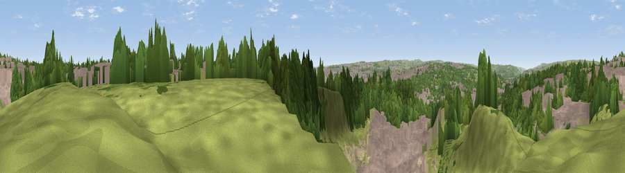

Viewpoint near Wrose
#22314 in England · top 37% of its area beats it · near WroseWhere it is
The exact computed spot (SE 16475 36225). Click the marker for map links.
The view, rendered

A 360° render of this exact spot computed from the terrain model, tree cover and land cover — summer colours, afternoon light, calibrated against photographs of famous viewpoints. Real trees, hedges and buildings will differ in detail.
The panorama
Grey silhouette: terrain skyline in each direction (720 bearings, Earth curvature and refraction included). Dashed green: skyline with trees (+15 m) and buildings (+8 m) as obstacles. Blue strip: how far the ground is visible on each bearing.
Where the view opens
Wedge length = distance to the farthest visible ground on that bearing (vegetation-aware). Rings at 10, 25 and 50 km.
What fills the view
38% built-up · 32% grassland · 26% woodland · 4% bare ground
Angular shares of the visible panorama (visual magnitude), not map area. Landscape diversity 0.53 (0–1 Shannon).
Key numbers
More beautiful places nearby
The staircase of upgrades: each row has a higher view potential than everything closer. Driving times are estimates from straight-line distance, calibrated against real road routing — check an actual route before setting out.
| Place | Direction | Drive | Score |
|---|---|---|---|
| Viewpoint near Wrose | N · 1 km | ~3 min | 66.5 |
| Viewpoint near Baildon | NNW · 4 km | ~10 min | 70.4 |
| Rawdon Billing | NE · 6 km | ~13 min | 72.7 |
| Viewpoint near Otley | NNE · 9 km | ~17 min | 77.5 |
| Viewpoint near East Witton | N · 49 km | ~70 min | 77.8 |
| Darwen Hill | WSW · 51 km | ~72 min | 80.7 |
| White Brow | WSW · 56 km | ~77 min | 82.9 |
| Beacon Hill | NNE · 70 km | ~93 min | 84.7 |
53.82204, -1.75122 · source: screening · position refined by local search. Computed location — check access rights before visiting.